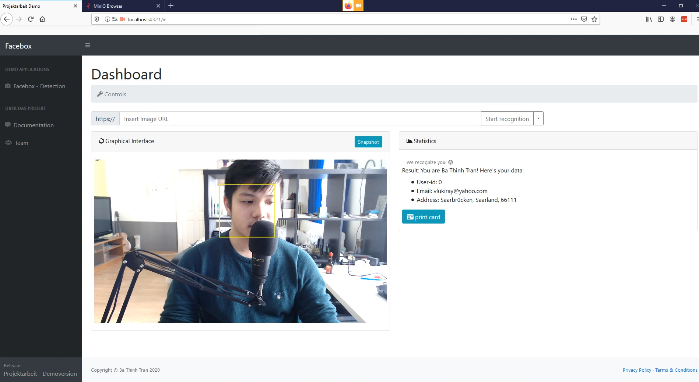

Übersicht¶
Die Demo-Anwendung wurde im Rahmen der Projektarbeit als visueller Prototyp entwickelt, um die Features der Backend-Services darzustellen. Die visuelle Darstellung des Interfaces ist frei wählbar und flexibel. Das Augenmerk soll auf der Schnittstelle und den Services liegen. Die Demo-Anwendung kann benutzt werden, um die Interaktion mit dem Backend besser nachzuvollziehen und eine Anwendung für den Produktionsbetrieb zu entwickeln.
Bemerkung
Zur Zeit der Abnahme wurde nur der Image-Processing Service in das Frontend des Projektes der Gruppe 6 integriert.
Um die Anwendung zu starten, muss man die Docker-Services mit unserer docker-compose.yml
starten und das Interface über localhost:4321 via Browser öffnen.
Demo Video¶
Bemerkung
Das Video ist nur auf der HTML Version der Dokumentation sichtbar. PDF unterstützt kein Video-Format.
Setup¶
Die Demo-Anwendung wurde entwickelt um die Schnittstellen der folgenden Services zu testen:
face-box
face-recognition
image-processing
Die Browser-basierte Anwendung wird durch Nodejs betrieben, die mithilfe der MQTT Schnittstelle und der Anbindung zum MinIO Storage, die Funktionalität der Services ausführen kann. Zusätzlich wird eine Postgre-Datenbank betrieben, um die personenbezogenen Daten abzuspeichern und diese durch die Wiedererkennung des Gesichts abrufbar zu machen. Die Datenbank läuft über eine vorgefertigtes Docker Image mit minimaler Konfiguration und vordefiniertem SQL Schemata:
FROM postgres:10
ENV POSTGRES_PASSWORD postgres
ENV POSTGRES_DB testdb
COPY ./database/postgresql.conf /etc/postgresql/postgresql.conf
COPY ./database/init.sql /docker-entrypoint-initdb.d/
CMD ["postgres", "-c", "config_file=/etc/postgresql/postgresql.conf"]
{kind=link}
Use Case¶
Der Nutzer drückt auf Start Recognition.
Das Frontend öffnet einen
Webcam-Streamund schickt eineFacebox-Anfragean den Facebox Service.Der Nutzer drückt auf Snapshot.
Das Frontend schickt eine
Recognition-Anfrageund ein Bild vom Nutzer an den Recognition Service.Das Backend schickt ein
Recognition Ergebniszurück.Der Nutzer wird nicht wiedererkannt.
Bemerkung
Sofern der Nutzer wiedererkannt wird, werden die Persondaten in einem Formular angezeigt und der Workflow ist abgeschlossen.
Das Frontend zeigt ein Formular an.
Der Nutzer kann nun seine Daten eingeben und sich für die Anwendung registrieren lassen.
{kind=link}
Der Nutzer sendet das Formular ab.
Das Frontend schickt eine
REST Anfragemit den Personendaten in das Backend und nimmt parallel Bilder für das Training der Face-recognition Service.Das Backend speichert die Daten in die Datenbank und in das minIO Storage.
Der Nutzer kann nun die Anwendung auf einem anderen Computer verwenden, um sein Gesicht zu erkennen und seine Personendaten abzurufen beziehungsweise ausdrucken zu lassen.
{kind=link}